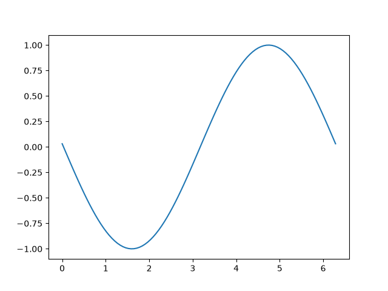
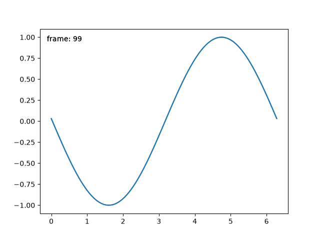

Note
Go to the end to download the full example code.
Faster rendering by using blitting#
Blitting is a standard technique in raster graphics that,
in the context of Matplotlib, can be used to (drastically) improve
performance of interactive figures. For example, the
animation and widgets modules use blitting
internally. Here, we demonstrate how to implement your own blitting, outside
of these classes.
Blitting speeds up repetitive drawing by rendering all non-changing graphic elements into a background image once. Then, for every draw, only the changing elements need to be drawn onto this background. For example, if the limits of an Axes have not changed, we can render the empty Axes including all ticks and labels once, and only draw the changing data later.
The strategy is
Prepare the constant background:
Draw the figure, but exclude all artists that you want to animate by marking them as animated (see
Artist.set_animated).Save a copy of the RBGA buffer.
Render the individual images:
Restore the copy of the RGBA buffer.
Redraw the animated artists using
Axes.draw_artist/Figure.draw_artist.Show the resulting image on the screen.
One consequence of this procedure is that your animated artists are always drawn on top of the static artists.
Not all backends support blitting. You can check if a given canvas does via
the FigureCanvasBase.supports_blit property.
Minimal example#
We can use the FigureCanvasAgg methods
copy_from_bbox and
restore_region in conjunction with setting
animated=True on our artist to implement a minimal example that
uses blitting to accelerate rendering
import matplotlib.pyplot as plt
import numpy as np
x = np.linspace(0, 2 * np.pi, 100)
fig, ax = plt.subplots()
# animated=True tells matplotlib to only draw the artist when we
# explicitly request it
(ln,) = ax.plot(x, np.sin(x), animated=True)
# make sure the window is raised, but the script keeps going
plt.show(block=False)
# stop to admire our empty window axes and ensure it is rendered at
# least once.
#
# We need to fully draw the figure at its final size on the screen
# before we continue on so that :
# a) we have the correctly sized and drawn background to grab
# b) we have a cached renderer so that ``ax.draw_artist`` works
# so we spin the event loop to let the backend process any pending operations
plt.pause(0.1)
# get copy of entire figure (everything inside fig.bbox) sans animated artist
bg = fig.canvas.copy_from_bbox(fig.bbox)
# draw the animated artist, this uses a cached renderer
ax.draw_artist(ln)
# show the result to the screen, this pushes the updated RGBA buffer from the
# renderer to the GUI framework so you can see it
fig.canvas.blit(fig.bbox)
for j in range(100):
# reset the background back in the canvas state, screen unchanged
fig.canvas.restore_region(bg)
# update the artist, neither the canvas state nor the screen have changed
ln.set_ydata(np.sin(x + (j / 100) * np.pi))
# re-render the artist, updating the canvas state, but not the screen
ax.draw_artist(ln)
# copy the image to the GUI state, but screen might not be changed yet
fig.canvas.blit(fig.bbox)
# flush any pending GUI events, re-painting the screen if needed
fig.canvas.flush_events()
# you can put a pause in if you want to slow things down
# plt.pause(.1)

This example works and shows a simple animation, however because we are only grabbing the background once, if the size of the figure in pixels changes (due to either the size or dpi of the figure changing) , the background will be invalid and result in incorrect (but sometimes cool looking!) images. There is also a global variable and a fair amount of boilerplate which suggests we should wrap this in a class.
Class-based example#
We can use a class to encapsulate the boilerplate logic and state of
restoring the background, drawing the artists, and then blitting the
result to the screen. Additionally, we can use the 'draw_event'
callback to capture a new background whenever a full re-draw
happens to handle resizes correctly.
class BlitManager:
def __init__(self, canvas, animated_artists=()):
"""
Parameters
----------
canvas : FigureCanvasAgg
The canvas to work with, this only works for subclasses of the Agg
canvas which have the `~FigureCanvasAgg.copy_from_bbox` and
`~FigureCanvasAgg.restore_region` methods.
animated_artists : Iterable[Artist]
List of the artists to manage
"""
self.canvas = canvas
self._bg = None
self._artists = []
for a in animated_artists:
self.add_artist(a)
# grab the background on every draw
self.cid = canvas.mpl_connect("draw_event", self.on_draw)
def on_draw(self, event):
"""Callback to register with 'draw_event'."""
cv = self.canvas
if event is not None:
if event.canvas != cv:
raise RuntimeError
self._bg = cv.copy_from_bbox(cv.figure.bbox)
self._draw_animated()
def add_artist(self, art):
"""
Add an artist to be managed.
Parameters
----------
art : Artist
The artist to be added. Will be set to 'animated' (just
to be safe). *art* must be in the figure associated with
the canvas this class is managing.
"""
if art.figure != self.canvas.figure:
raise RuntimeError
art.set_animated(True)
self._artists.append(art)
def _draw_animated(self):
"""Draw all of the animated artists."""
fig = self.canvas.figure
for a in self._artists:
fig.draw_artist(a)
def update(self):
"""Update the screen with animated artists."""
cv = self.canvas
fig = cv.figure
# paranoia in case we missed the draw event,
if self._bg is None:
self.on_draw(None)
else:
# restore the background
cv.restore_region(self._bg)
# draw all of the animated artists
self._draw_animated()
# update the GUI state
cv.blit(fig.bbox)
# let the GUI event loop process anything it has to do
cv.flush_events()
Here is how we would use our class. This is a slightly more complicated example than the first case as we add a text frame counter as well.
# make a new figure
fig, ax = plt.subplots()
# add a line
(ln,) = ax.plot(x, np.sin(x), animated=True)
# add a frame number
fr_number = ax.annotate(
"0",
(0, 1),
xycoords="axes fraction",
xytext=(10, -10),
textcoords="offset points",
ha="left",
va="top",
animated=True,
)
bm = BlitManager(fig.canvas, [ln, fr_number])
# make sure our window is on the screen and drawn
plt.show(block=False)
plt.pause(.1)
for j in range(100):
# update the artists
ln.set_ydata(np.sin(x + (j / 100) * np.pi))
fr_number.set_text(f"frame: {j}")
# tell the blitting manager to do its thing
bm.update()

This class does not depend on pyplot and is suitable to embed
into larger GUI application.
Total running time of the script: (0 minutes 1.432 seconds)